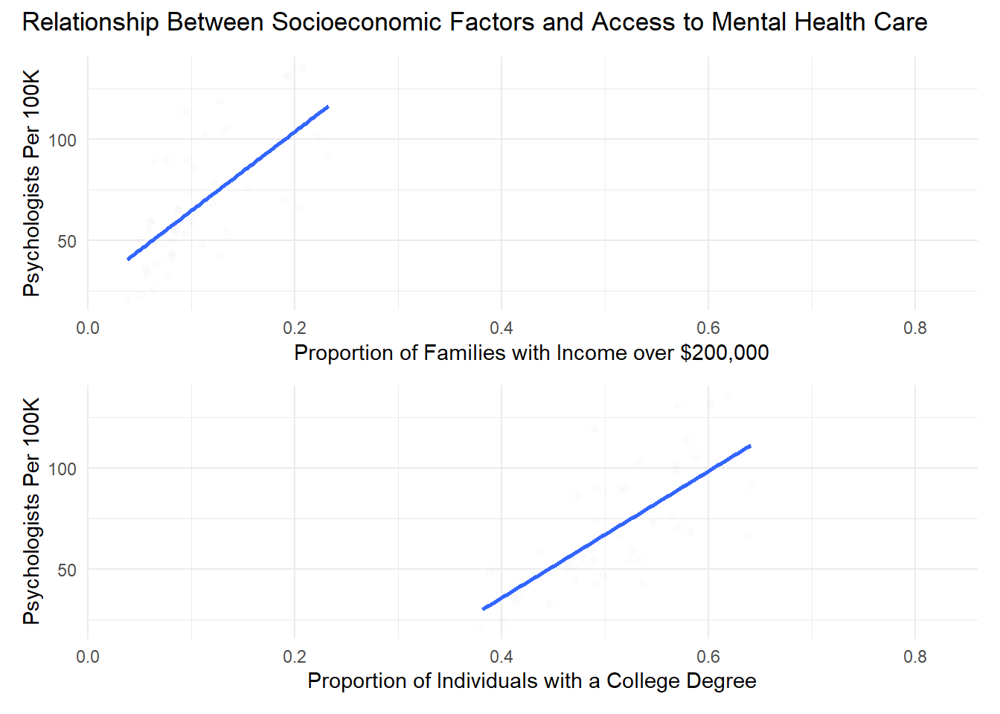
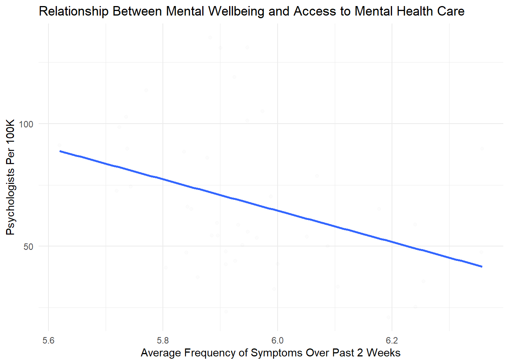

In 2019, according to the World Health Organization (WHO), one in eight people, or 970 million people around the world, were living with a mental disorder. When looking exclusively at the United States, the proportion of adults living with a mental illness increases to more than one in five, or 59.3 million people (23.1% of the US adult population), according to the National Institute of Mental Health (NIHM). There are numerous contributing factors to this issue, including but not limited to physical mobility, physical activity, life experiences, substance use, and biological factors. While these variables impact well-being, most remain out of people’s control. It is also important to recognize that factors impacting healthcare access play a significant role. Countless elements impact mental health, but we look strictly at three factors.
Through analysis of the Household Pulse Survey and Area Health Resource Data, we examine the relationship between mental well-being, access to mental health care, age, income, education, and race.
Mental well-being is measured through the Household Pulse Survey, where families reported the frequency of certain mental health symptoms, such as loneliness, anxiety, and feeling down. These were then totaled to find an overall measure of mental well-being. Age, income, and education level also come from the Household Pulse Survey. Access to mental health care is measured through the number of psychologists per 100,000 people.
The maps below show that income and education appear to be correlated at the state level, as many states with higher average incomes also have higher average levels of education. Additionally, areas with higher average incomes and levels of education appear to also have improved access to care. However, the maps show no clear correlation with mental well-being.
For instance, New York has a high mean income, educational attainment, and psychology count, reaffirming two of our beliefs: states with higher average incomes tend to have higher average levels of educational attainment (1), and states with high averages of income and educations levels tend to have better access to psychologists (2). New York’s frequency level of mental health concern is also on the lower end of the scale. With this said, there is no definitive correlation between those three factors and mental well-being. Let us look at Utah, for example. Utah has relatively high averages in income, educational attainment, and psychologist count compared to other states. However, they have a high frequency of mental health concerns compared to other states. In a similar manner, South Carolina has low averages in income, educational attainment, and psychologist count, yet has a low frequency of mental health concerns when compared to other states with low means in income, educational levels, and psychologist count. Given these three state examples, it is evident there are correlations between average income, educational attainment, and psychologist count, but no trends with mental well-being can be certainly established.
We will look at each individual factor more closely and see if these correlations continue throughout our analysis.
The coord_sf element was found using Stack Overflow
In order to get a more accurate relationships between income, education level and mental well being, we can now plot mental well being against each of these factors.
Used [Stack Overflow] (https://stackoverflow.com/questions/1330989/rotating-and-spacing-axis-labels-in-ggplot2) to edit the lables.


Clearly, educational attainment and household income play a role in people’s mental health, but these are not the only contributors. If a state, for instance, had high averages of educational attainment and household income, there is still a chance that their frequency of undergoing mental health concerns is high. Let us look at New Hampshire in the maps that we just examined. New Hampshire has high averages in educational attainment and household income, yet it exhibits a relatively high frequency of mental health concerns when compared to other states with high averages in education levels and income, i.e., New Hampshirites’ well-beings are not ideal. With this said, we determined that access to care has an effect on mental health. This notions aligns with the example of New Hampshire, as the number of psychologists they have per 100,000 is relatively low. We evaluated how access to mental health care is impacted by educational attainment and income to emphasize the correlation between all these variables.
Below are the plots illustrating the relationships between access to mental health professionals against education level and income. Following our analysis of the maps, there appears to be a positive correlation between both education level and income and access to mental health. In other words, states with higher educational attainment are more likely to have better access to mental health providers; and states with higher household incomes are more likely to have better access to mental health providers.
However, this data is also limited as it only looks at the state level, and not a more micro-scale, such as by city or county. These other factors could have more variation in the number of psychologists, income, and education level.


We know that from a state level, educational attainment, income, and the number of psychologists per 100,000 are all correlated, and educational attainment and income affect mental well-being. As mentioned in the example of New Hampshire, access to care also has a role in mental well-being. Given this, in the plot below, we evaluated the relationship between average frequency of mental health concerns in a state against the number of psychologists in the state per 100,000.
There is a negative correlation, where as the number of psychologists per 100,000 increases, the frequency of mental health concerns decreases. Based on this, we know there is a correlation between the two variables, and states with a higher count of psychologists per 100,000 are more likely to have better well-beings since the frequency in experiencing mental health concerns decreases. Thus, similar to educational attainment and household income, it is evident that access to mental health professions influences mental well-being.

After doing in-depth analyses of the variables educational attainment, household income, and mental healthcare accessibility to assess their impact on people’s well-beings, we reaffirmed our thesis stating those variables can predict individuals’ mental health and well-being.
We created four maps which showed the psychologist count per 100,000 and means of income and educational attainment are positively correlated. We could not, however, state conclusive findings about the mean frequency of mental health concerns. The line charts comparing the average frequency of mental health concerns against the average educational attainment displayed a negative correlation. In other words, as the average education level of a state increases, their frequency in experiencing mental health concerns decreases, showing they have better well-beings. The same findings are seen in the line graph showing the relationship between household income and frequency of mental health concerns. There is a negative correlation, so the higher the household income, the lower the frequency of mental health concerns. We also established that the level of educational attainment and household income are positively correlated with the number of psychologists per 100,000. This means that as education level and household income of a state go up, the accessibility to mental health care providers also increases, which aligns with our findings from the previous plots. Lastly, we found that as the availability and accessibility to these providers increases, the frequency of mental health concerns decreases, leading to better mental well-beings. In short, we concluded that educational attainment, household income, and the number of psychologists per 100,000 affect people’s mental health and well-beings.
Knowing this, there are certain strides that can be taken to reduce the frequency of experiencing mental health concerns, which could cause improvements in well-being. It would be good to better understand the impacts that education, income, and healthcare accessibility have on mental well-being. With this, legislatures might experiment with certain policies covering those areas to improve well-beings. Schools could mandate learning about healthcare, allowing people to recognize their resources at a younger age. The federal and state governments could raise minimum wage to a living wage, which could better allow people to access tools to improve their mental health. Finally, incentivizing people, like through loan forgiveness, to become mental health professionals in underserved areas could increase mental health access and therefore increase people’s well-being.